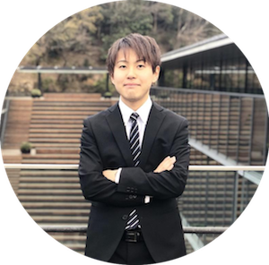
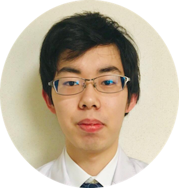
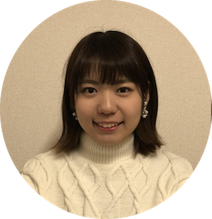
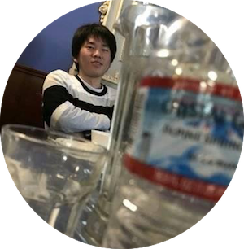
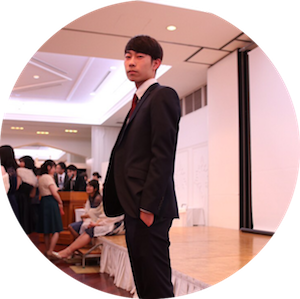
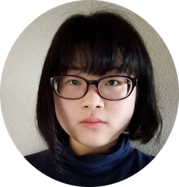
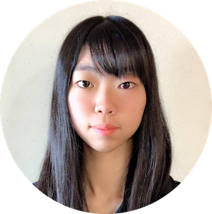

メンバー紹介
-

沖野 舜
1998年生/新潟県燕市出身/京都産業大学 総合生命科学部 動物生命医科学科
私はプロジェクトリーダーを担当しています。
私は、チームの代表としてメンバー全員を率いて大会で金賞を取り、世界中の学生の中でどれだけ挑戦できるのかを試してみたいと考えています。
そして、チーム全体のコミュニケーションを大事にし、メンバー全員が成長できたと感じてもらえるようなチームを作りたいと思います。
-

小村 裕哉
1999年生/島根県松江市出身/京都産業大学 総合生命科学部 生命資源環境学科
私はプロジェクトにおいて研究を担当しています。
今回のプロジェクトを通して研究を行う上で必要なスキルを身につけていきたいと思っております。
また、研究の代表としてメンバーの意見をまとめる力、研究を成功に導くことができるよう計画を立てる力を成長させたいと思っております。
-

桐島 沙也佳
1998年生/大阪府堺市出身/京都産業大学 総合生命科学部 動物生命医科学科
私はこのプロジェクトに対して、新しいことにでも怖がらず挑戦していくという気持ちを持っています。
そしてこの経験を通して、周りの方々にも挑戦すれば出来ないことはないということを証明できればと思っております。
-

栗岡 朋輝
1998年生/大阪府枚方市出身/京都産業大学 総合生命科学部 動物生命医科学科
私は、このプロジェクトは世界中の研究者と繋がれるいい経験になると考えています。
私は、公衆の場で発表があまり得意ではなくいつも緊張してしまいがちです。
そのためこのプロジェクトの成功は、私の短所の克服でもあり、新たな物への挑戦する勇気を与えてくれると考えています。
また、全てが始めてのことばかりですが、チャレンジ精神を持って取り組みたいです。
-

辻 健一郎
1998年生/京都府京都市出身/京都産業大学 コンピュータ理工学部 インテリジェントシステム学科
私はこのプロジェクトを通し、大学生活という様々な方からいただけたこの時間でコンピュータと生物の結び付きの可能性を見つけ、近い将来の就職という面で大いに役立てることができたら良いなと考えています。
-

山田 祐太朗
1998年生/山口県山口市出身/京都産業大学 理学部 物理科学科
私はiGEM-KSUにマネージャーとして関わっています。
そして、この活動以外にも学内外で様々な活動をしていて、学生の内にできるだけ経験を積んで自分のできることの範囲を広げたいと考えています。
代表と協力し、このチームのサポートに尽力します。
-

下本さやか
1999年生/京都産業大学 総合生命科学部 生命資源環境学科
このプロジェクトを通して環境問題を改善する方法の一つになればと思っております。
-

毛利 七香
2000年生/大阪府東大阪市出身/京都産業大学 総合生命科学部 動物生命医科学科
私はこのプロジェクトを通して困難な課題に立ち向かい解決していこうとする姿勢を大切にし、それを自身の成長に繋げるように努力していきたいと思います。
またその成果を皆さんに伝えられるように努力していきたいです。
-

持田 紗那
1999年生/奈良県在住/京都産業大学 総合生命科学部 動物生命医科学科
私はこのプロジェクトで自分の力で1から物事を進めていく大切さを実感し、伝えていこうという風に思っています。